Chapter 3 Cox 비례위험모형(PH model)
모수적 모형은 분포에 대한 가정이 타당할 때는 효율적이지만 어떤 모형이 적당한가에 대한 사전 지식 없이 사용하기 어려움
Cox의 비례위험모형(proportional hazards model)은 준모수적(semi-parameteric) 방법으로써 생존시간의 분포에 대한 가정을 필요로 하지 않음
Cox PH 모형은 시간에 따라 바뀌는 공변량(time-dependent variable)의 경우에도 분석할 수 있음
생존자료의 분석에서 자주 사용되는 모형으로 Cox 회귀분석(Cox regressin analysis) 이라고도 함
3.1 Cox PH model
생존시간을 \(T\), 영향을 주는 \(p\)개의 공변량 \(x_1, \ldots, x_p\)이 있을 때, Cox PH model: \[h(t)=h_0(t)exp(\beta_1 x_1+\cdots +\beta_p x_p)\]
여기서 \(h(t)\)는 공변량들을 고려했을 때의 위험함수(hazard function), \(h_0(t)\)는 기저위험함수(baseline hazard function) (예를 들어 공변량의 값들이 모두 0일 때의 위험함수의 값)
콕스 PH 모형의 기저위험함수 \(h_0(t)\)는 모수적 가정을 하지 않으므로 준모수적 방법이며, 콕스 모형의 중요한 특징 중 하나임
콕스 모형이 널리 사용되는 가장 중요한 이유는 기저위험함수의 분포에 대한 가정 없이도 회귀계수 및 위험비를 잘 추정해주고, 다양한 데이터에서 보정된 생존곡선을 그릴 수 있는 장점 때문
콕스 모형은 매우 강건(robust)하기 때문에 정확한 모수적인 모형의 추정 결과와 근접한 결과를 얻을 수 있음
- 기저위험함수에 대한 정확한 모수적 모형을 알 수 있는 경우에, 콕스 모형을 통한 분석 결과는 모수적 모형의 결과와 매우 유사함
3.1.1 위험비(hazard ratio) 계산
위험비는 어떤 대상의 위함을 다른 대상의 위험으로 나눈 값
어떤 대상의 설명변수들을 \(X^*\)라 하고 다른 대상의 설명변수들을 \(X\)라고 하면 추정된 위험비는 다음과 같음
\[ \hat{HR}=\frac{\hat{h}(t,X^*)}{\hat{h}(t,X)} \]
- 위험비의 식을 기저위험함수와 지수식의 곱으로 표현하면, 기저위험함수는 약분되어 사라지고 지수식만 남게 됨
\[ \hat{HR}=exp(\sum_{i=1}^p \hat{\beta}(X_i^*-X_i)) \]
위험비의 계산에서 시간에 따라 변화하는 기저위험함수가 사라지고 설명변수와 회귀계수만 남게 됨
즉, 위험비는 시간이 변하더라도 변하지 않고 일정함을 의미함. 따라서 콕스의 위험비를 "비례위험"이라고 함
AutoReg 패키지에 포함되어 있는 anderson 데이터를 사용하여 콕스 PH 모형을 적합 하면 다음과 같음
anderson 데이터는 백혈병 환자 42명의 데이터로 대조군(rx=1)과 치료군(rx=0)의 재발(status=1)까지의 시간[time, 단위: 주수(week)]을 기록한 생존데이터이다. 이 데이터에는 성별(sex 0:Female, 1:Male)과 로그백혈구 수(logWBC)가 포함되어 있다.
- 필요 패키지 로드
library(autoReg)
library(survival)
library(survminer)
library(howto)
library(flextable)
library(ftExtra)
library(tidyverse)fit=coxph(Surv(time,status)~rx+logWBC,data=anderson)
summary(fit)## Call:
## coxph(formula = Surv(time, status) ~ rx + logWBC, data = anderson)
##
## n= 42, number of events= 30
##
## coef exp(coef) se(coef) z Pr(>|z|)
## rx 1.3861 3.9991 0.4248 3.263 0.0011 **
## logWBC 1.6909 5.4243 0.3359 5.034 4.8e-07 ***
## ---
## Signif. codes: 0 '***' 0.001 '**' 0.01 '*' 0.05 '.' 0.1 ' ' 1
##
## exp(coef) exp(-coef) lower .95 upper .95
## rx 3.999 0.2501 1.739 9.195
## logWBC 5.424 0.1844 2.808 10.478
##
## Concordance= 0.852 (se = 0.04 )
## Likelihood ratio test= 46.71 on 2 df, p=7e-11
## Wald test = 33.6 on 2 df, p=5e-08
## Score (logrank) test = 46.07 on 2 df, p=1e-10- 위 모형과 같이 rx의 변화에 따른 위험비는 다음과 같음. 이때 모형에 같이 적용된 logWBC는 두 개체간 같은 값을 가진다고 가정함
\[ \hat{HR}=exp(1.3861(1-0)+1.6909(logWBC-logWBC))=exp(1.3861)=3.999 \]
- 따라서 rx=0인 경우보다 rx=1인 경우에 위험도는 3.999배 높다고 할 수 있음
- 마찬가지로 rx가 같은 경우 logWBC 값이 1 증가할 경우 위험도는 5.424배 높아짐
**** 추가설명 {-}
양변에 로그를 취하고 \(\alpha(t)=logh_0(t)\)로 놓으면 \[log h(t)=\alpha(t)+\beta_1x_1+\cdots+\beta_px_p\]
만약 \(\alpha(t)=\alpha_0\)로 놓으면 지수모형과 같은 형태
만약 \(\alpha(t)=\alpha_0 + \alpha t\)로 놓으면 곰페르츠 모형과 같은 형태
만약 \(\alpha(t)=\alpha_0 + \alpha logt\)로 놓으면 와이블 모형과 같은 형태
Cox 모형은 분포의 선택이 필요하지 않으며, \(\alpha(t)\)의 형태가 어떤 것이든 무관
"비례위험모형"의 의미는 어느 환자의 위험률과 다른 환자의 위험률의 비가 시간에 대해 일정하다는 것을 의미
예를 들어, \(i\)번째 환자와 \(j\)번째 환자의 위험함수의 비는
\[h_i(t)/h_j(t)=exp(\beta_1(x_{i1}-x_{j1})+\cdots+\beta_p(x_{ip}-x_{jp}))\]
가 되어 기저위험함수는 상쇄되어 없어지고 위험함수의 비는 시간에 대해서 상수로 됨
- 비례위험의 가정이 맞다면, 두 환자에 대해 시간 \(t\)에 따른 \(log\hat{H}(t)\) 또는 \(log(-log\hat{S}(t))\)의 그래프가 평행하게 되어야 함
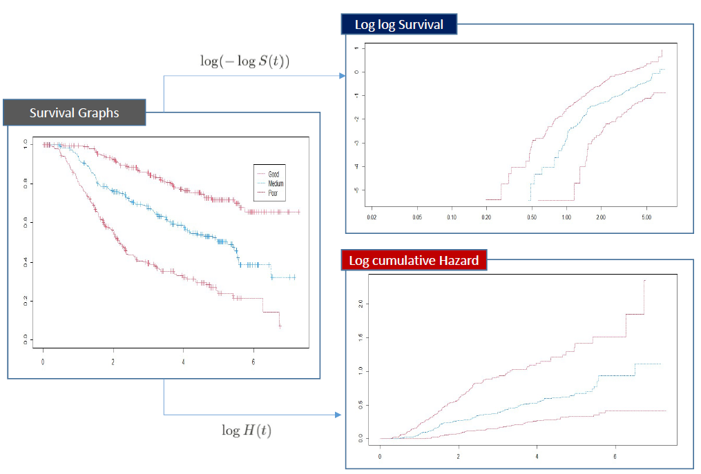
3.2 콕스 PH 모형을 이용한 보정된 생존곡선
- anderson 데이터에서 rx에 따른 생존곡선은 다음과 같음
fit=survfit(Surv(time,status)~rx,data=anderson)
plot(fit)
logWBC의 효과를 보정하고 rx에 따른 생존곡선을 그리려면 먼저 그림을 그릴 새로운 데이터를 생성해야 함
이때, rx의 값과 logWBC의 값을 정해주어야 하며, logWBC의 중앙값을 적용함
fit=coxph(Surv(time,status)~rx+logWBC,data=anderson)
rx=c(0,1)
logWBC=median(anderson$logWBC)
newdata=data.frame(rx,logWBC)
plot(survfit(fit,newdata=newdata),col=1:2,lty=1:2)
legend("topright", legend=c("rx=0","rx=1"), col=1:2, lty=1:2)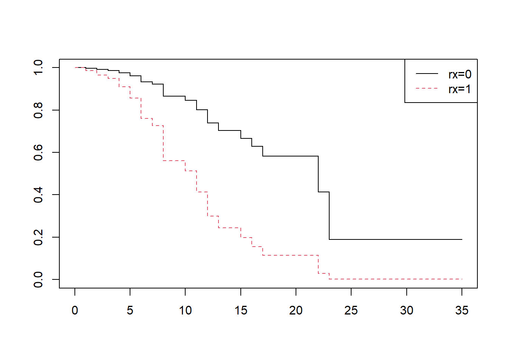
- R의 autoReg 패키지 내 adjustedPlot을 이용하여 보정된 생존곡선을 그리는 것이 가능함
fit2=coxph(Surv(time,status)~rx+logWBC,data=anderson)
adjustedPlot(fit2,xnames="rx")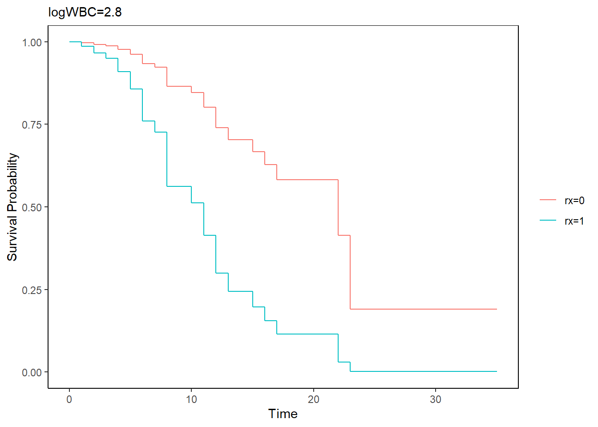
- 설명 변수가 여러 개 있는 경우에도 보정된 생존곡선이 가능
data(cancer,package="survival")
fit=coxph(Surv(time,status)~rx+sex+age+differ,data=colon)
adjustedPlot(fit,xnames=c("rx"))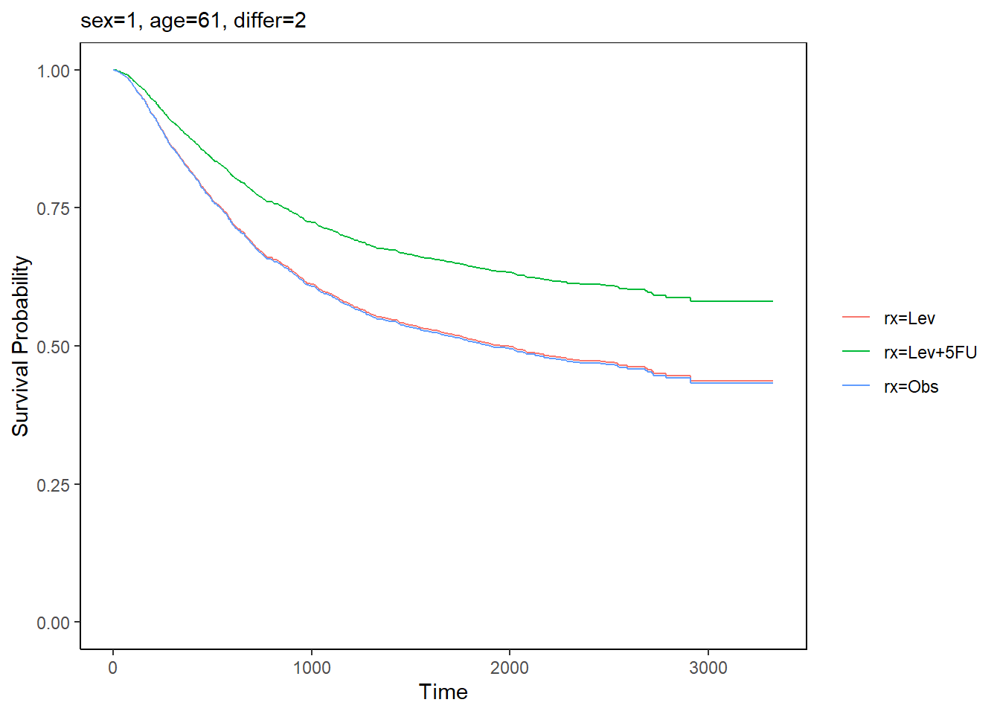
3.3 비례위험 가정 평가
- 비례위험 가정을 평가하는 방법으로 1) 그래프를 이용하는 방법, 2) 적합도 검정을 이용하는 방법, 3) 시간의존 공변량을 사용하는 방법 등이 있음
3.3.1 그래프를 이용하는 방법
- 비례위험 가정을 평가하는 방법 중 그래프를 이용하는 방법은 1) 로그-로그(log-log) 생존곡선을 비교하는 방법, 2) 관찰생존곡선-기대생존곡선을 비교하는 방법이 있다.
로그-로그 생존곡선 그림
두 그룹 간의 생존을 비교할 때 콕스비례위험 가정하에 두 그룹의 생존은 다음과 같음 관계를 가짐
\(S_0\)를 첫번째 그룹의 생존, \(S_1\)을 두 번째 그룹의 생존, \(exp(\beta)\)를 비례위험상수라 하면
\[ S_1(t)=S_0(t)^{exp(\beta)} \]
- 양변에 로그를 취하면
\[ log(S_1(t))=exp(\beta) \times log(S_0(t)) \]
- 생존함수는 1보다 작으므로 생존함수의 로그는 음수값이 됨. 양변에 -1을 곱한 후 다시 양변의 로그를 취하면
\[ log(-log(S_1(t)))=\beta + log(-log(S_0(t))) \]
- 따라서 비례위험 가정이 맞으면, 로그-로그 곡선은 \(\beta\) 크기만큼 차이를 두고 평행해야 함
fit=survfit(Surv(time,status)~rx,data=anderson)
loglogplot(fit)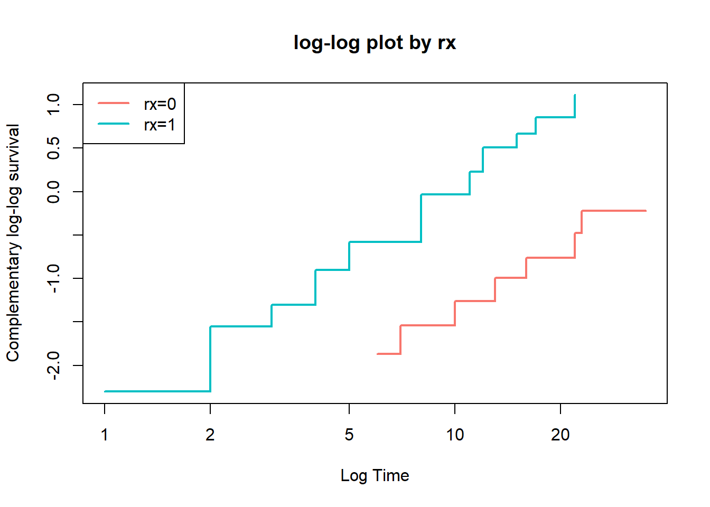
- anderson 데이터에서 sex를 설명변수로 하는 모형의 비례위험가정을 살펴보면
fit1=survfit(Surv(time,status)~sex,data=anderson)
loglogplot(fit1)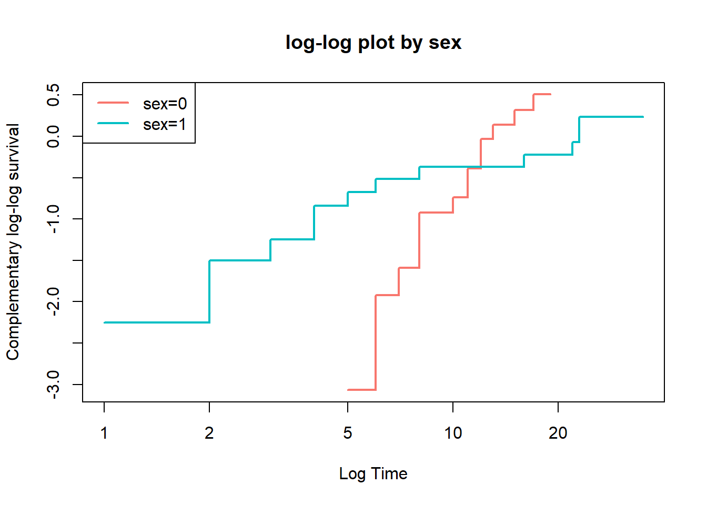
남자(sex=0)와 여자(sex=1)의 로그-로그 생존곡선이 서로 교차하기 때문에 비례위험 가정이 맞지 않음
logWBC에 대해서, logWBC는 연속형 변수이기 때문에 그룹으로 나누어 살펴보아야 함
fit2=survfit(Surv(time,status)~logWBC,data=anderson)
loglogplot(fit2)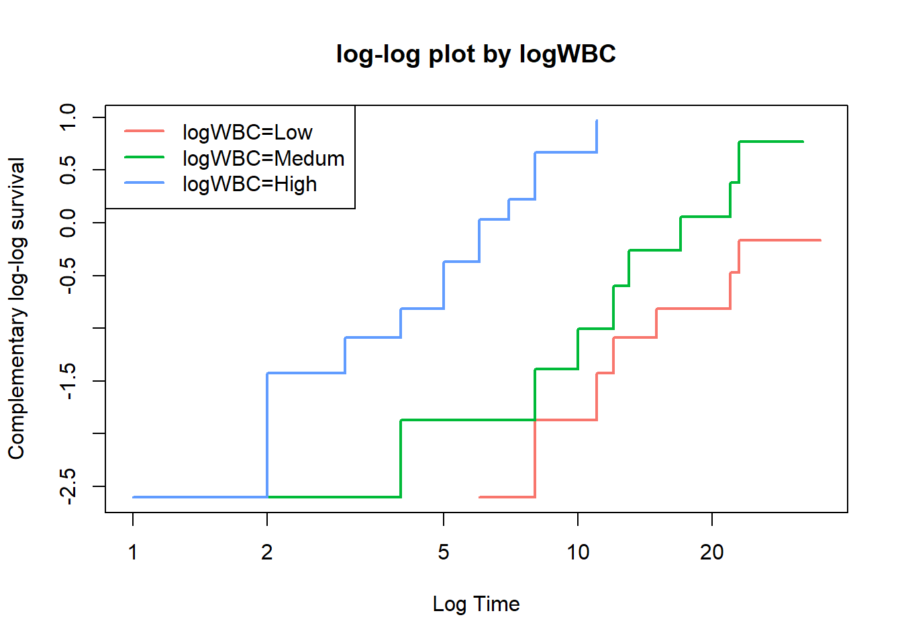
fit3=survfit(Surv(time,status)~rx+logWBC,data=anderson)
loglogplot(fit3,no=2)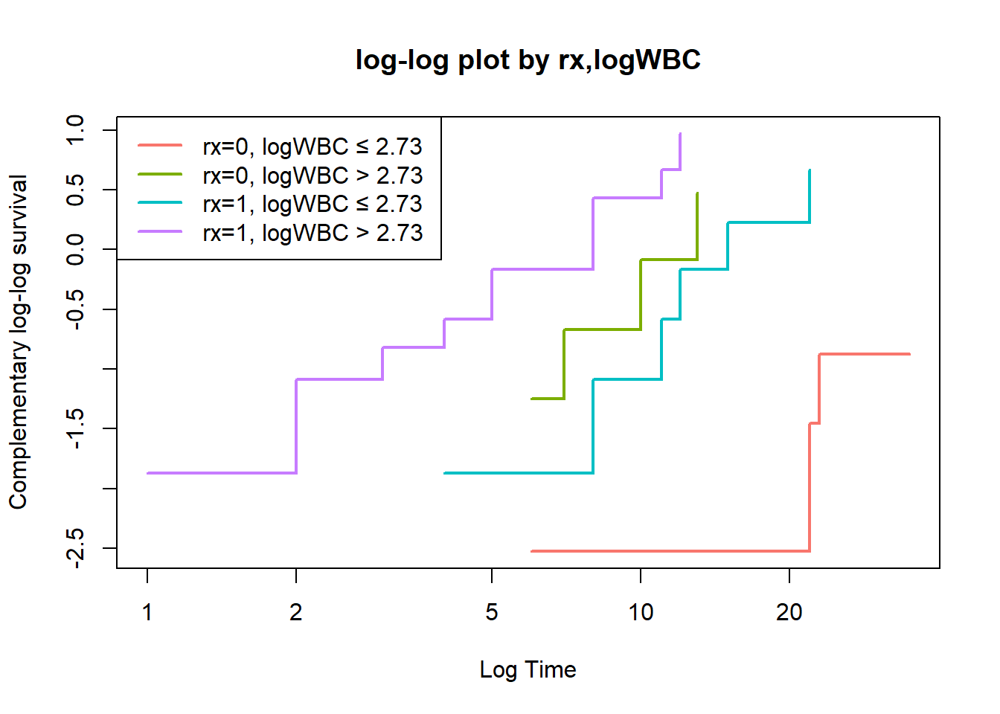
로그-로그 생존곡선을 이용하여 비례위험 가정을 평가하는 방법은 직관적이기는 하지만 통계적 유의성을 평가할 수 없음
특히, 데이터의 수가 적은 경우 문제가 되며, 여러 변수에 대하여 한꺼번에 로그-로그 생존곡선을 그리는 경우 각 그룹에 속한 데이터의 개수가 더 작아지므로 가능하면 하나의 변수를 평가하는 것이 바람직함
관측-기대값 그림
- 관측-기대값 그림(observed versus expected plot)은 적합도 검정(goodness of fit, GOF) 검정을 그래프로 그린 것이며, 로그-로그 생존곡선의 대안이 될 수 있음
fit=coxph(Surv(time,status)~rx,data=anderson)
OEplot(fit)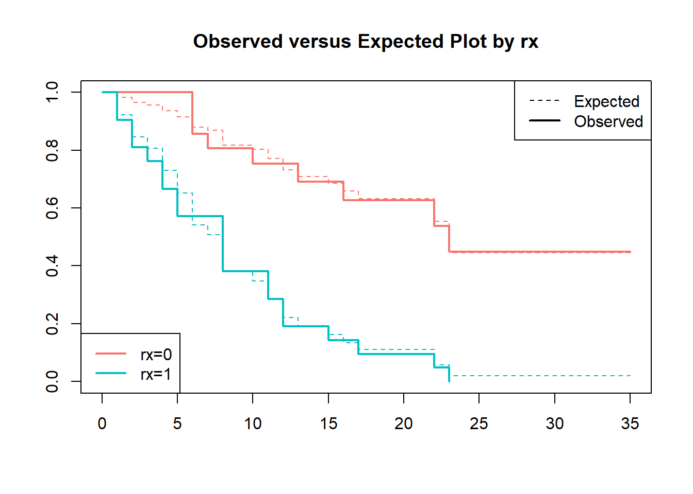
점선으로 나타낸 기대값과 실선으로 나타난 관측값 곡선이 가까우면 비례위험 가정에 적합하며, 두 곡선에 차이가 있으면 비례위험 가정이 위배된다고 할 수 있음
로그-로그 생존곡선이 "얼마나 평행해야 평행한 것인가?"라는 한계가 있는 것과 마찬가지로 관측-기대값 그림 또한 "얼마나 가까워야 가까운 것인가?"라는 문제가 있음
관측값과 기대값의 차이가 심하게 나타날 때 비례위험 가정에 위반된다고 평가하는 것이 바람직 함
fit1=coxph(Surv(time,status)~sex,data=anderson)
OEplot(fit1)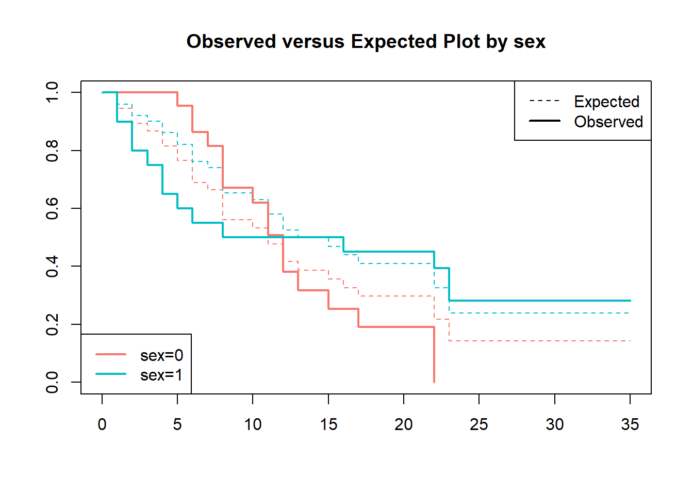
- 성별에 대해서는 비례위험 가정을 만족하지 못할 가능성을 시사해 줌
3.3.2 적합도 검정
적합도 검정은 관심 있는 설명변수의 비례위험 가정에 대한 검정통계량과 p값을 제공해주기 때문에 그래프를 이용한 방법에 비해 보다 객관적인 결과를 제시함
적합도 검정에는 Schoenfeld 잔차를 사용하며, Schoenfeld 잔차는 대상환자 각각에 대하여 이벤트 발생 시 관찰된 예측변수 값에서 예측변수의 가중평균을 빼서 계산
적합도 검정은 특정 예측변수에 대한 Schoenfeld 잔차가 생존시간에 관계없이 일정한지를 검정
fit=coxph(Surv(time,status)~rx+sex+logWBC,data=anderson)
x=cox.zph(fit)
x## chisq df p
## rx 0.036 1 0.85
## sex 5.420 1 0.02
## logWBC 0.142 1 0.71
## GLOBAL 5.879 3 0.12- rx와 logWBC에 대한 p값은 유의하지 않으나 sex에 대한 p값은 유의한 것으로 나타남
coxzphplot(x)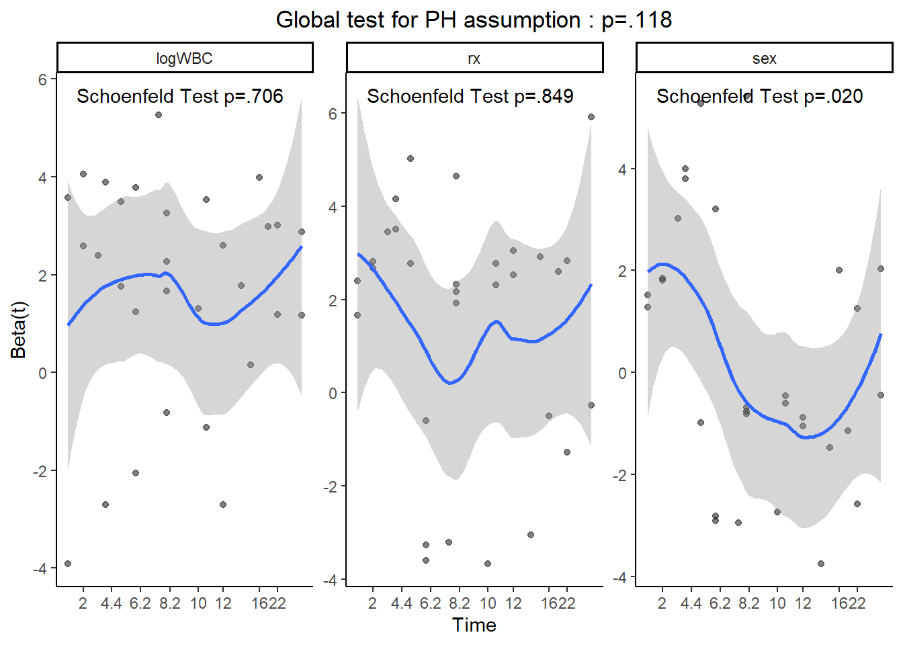
- 이 중 sex에 대한 plot만 그려보면
coxzphplot(x, var="sex", add.lm=T)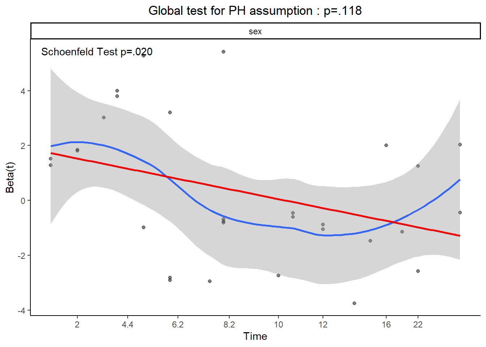
- loess(blue) 회귀곡선에 빨간색의 직선회귀선을 그린 그림으로, 시간이 경과함에 따라서 sex의 위험이 감소하는 것으로 나타남. 이는 시간의 흐름에 따라 sex의 위험이 일정하지 않은, 비례위험 가정을 만족하지 않은 것을 뜻 함
3.4 시간의존 공변량
콕스 PH 모형의 중요한 가정은 연구가 시작될 때 공변량이 정해지며 시간이 지나도 공변량은 변하지 않는다는 것임
하지만 어떤 경우에는 공변량이 시간에 따라 변할 수 있으며, 이를 시간의존 공변량(time-dependent covariate)이라고 함
예를 들어, 백혈병 환자의 사망 시점이 관심 있는 반응변수일 때 골수이식과 같은 중간사건(intermediate event)의 발생 여부는 사망시간을 예측하는 데 매우 중요한 영향을 미칠 수 있음
- 여기서 중간사건은 연구 기간 동안 그 발생 여부가 서로 다르며 발생 시점 또한 다름
- 따라서, 중간사건은 시간의존 공변량으로 간주할 수 있음
시간에 따라 변화하는 공변량을 고려한 Cox PH 모형
\[ log h(t)=\alpha(t)+\beta_1 x_1 +\cdots +\beta_p x_p + \beta_{p+1}x_{p+1}(t) \]
스탠포드 심장이식 연구
시간의존 공변량을 다룰 때 주의할 점은 미래의 공변량 값으로 생존을 예측할 수 없다는 것임
1971년 Clark 등의 연구에서, 심장이식 프로그램에 등록된 환자의 생존에 대해, 심장이식을 받은 환자는 심장이식을 받지 않은 환자에 비해 유의하게 생존이 증가함을 시사함
data(heart,package="survival")
fit=coxph(Surv(futime,fustat)~transplant+age+surgery,data=jasa)
summary(fit)## Call:
## coxph(formula = Surv(futime, fustat) ~ transplant + age + surgery,
## data = jasa)
##
## n= 103, number of events= 75
##
## coef exp(coef) se(coef) z Pr(>|z|)
## transplant -1.71711 0.17958 0.27853 -6.165 7.05e-10 ***
## age 0.05889 1.06065 0.01505 3.913 9.12e-05 ***
## surgery -0.41902 0.65769 0.37118 -1.129 0.259
## ---
## Signif. codes: 0 '***' 0.001 '**' 0.01 '*' 0.05 '.' 0.1 ' ' 1
##
## exp(coef) exp(-coef) lower .95 upper .95
## transplant 0.1796 5.5684 0.1040 0.310
## age 1.0607 0.9428 1.0298 1.092
## surgery 0.6577 1.5205 0.3177 1.361
##
## Concordance= 0.732 (se = 0.031 )
## Likelihood ratio test= 45.85 on 3 df, p=6e-10
## Wald test = 47.15 on 3 df, p=3e-10
## Score (logrank) test = 52.63 on 3 df, p=2e-11gaze(fit) %>% myft() %>% highlight(i=1)## Usage of empty symbol '' with footnote should not happen, use `add_footer_lines()` instead, it does not require any symbol. This usage will be forbidden in the next release. Please, wait for 10 seconds!
| coef | se(coef) | z | Pr(>|z|) | HR | lower | upper |
transplant | -1.717 | 0.279 | -6.165 | <.001 | 0.180 | 0.104 | 0.310 |
age | 0.059 | 0.015 | 3.913 | <.001 | 1.061 | 1.030 | 1.092 |
surgery | -0.419 | 0.371 | -1.129 | .259 | 0.658 | 0.318 | 1.361 |
n=103, events=75, Likelihood ratio test=45.85 on 3 df (p<.001) | |||||||
- 이 연구에서 가장 중요한 공변량 transplant는 심장이식을 받은 경우 1, 받지 않은 경우 0으로 입력되었으며, 공변량 transplant의 위험률(hazard ratio)는 0.18로 매우 낮은 p값을 보임
- 이 결과는 심장이식이 환자의 수명을 늘리는 데 매우 효과적임을 시사함
- 하지만, 이 연구의 문제는 심장이식이 시간에 따라 변화하는 공변량이라는 점이며, 환자가 심장이식을 받기 위해서는 심장이식을 받을 수 있을 만큼 오래 살아야 함을 의미함
- 따라서 이 결과는 오래 산 환자(심장이식 받음)가 오래 살지 못한 환자에 비해 오래 살았다는 것을 보여준 것에 지나지 않음
- 이러한 문제에 대한 간단한 해결방법은 랜드마크 시간을 정해 환자를 두 군으로 나누는 것임
- 랜드마크 시간전에 심장이식을 받은 환자들은 환자군으로 하고 심장이식을 받지 못한 환자들은 대조군으로 함
- 이때 중요한 점은 1) 랜드마크 시간까지 생존한 환자들만 연구에 포함시키고 2) 모든 환자들(특히 대조군에 속한 환자들)은 랜드마크 시간 이후에 이식을 받더라도 대조군에 계속 남아 있어야 함
- 랜드마크 30일을 기준으로 한 분석 결과
ind30 <- jasa$futime >= 30
transplant30 <- (jasa$transplant==1) & (jasa$wait.time<30)
fit1=coxph(Surv(futime,fustat)~transplant30+age+surgery,data=jasa,subset=ind30)
gaze(fit1) %>%myft( ) %>% highlight(i=1)## Usage of empty symbol '' with footnote should not happen, use `add_footer_lines()` instead, it does not require any symbol. This usage will be forbidden in the next release. Please, wait for 10 seconds!
| coef | se(coef) | z | Pr(>|z|) | HR | lower | upper |
transplant30TRUE | -0.042 | 0.284 | -0.148 | .882 | 0.959 | 0.550 | 1.672 |
age | 0.037 | 0.017 | 2.170 | .030 | 1.038 | 1.004 | 1.073 |
surgery | -0.820 | 0.413 | -1.985 | .047 | 0.441 | 0.196 | 0.990 |
n=79, events=52, Likelihood ratio test=9.5 on 3 df (p=.023) | |||||||
- transplant30의 위험률은 0.96(95% CI: 0.55-1.67, p=.882)으로 유의하지 않게 나타남
- 랜드마크 분석에 따르면 심장이식을 받은 환자와 받지 않은 환자 간의 생존차이는 없다고 할 수 있음
- 랜드마크 방법은 적용하기 쉽지만 랜드마크의 크기를 어떻게 정하는지에 대한 뚜렷한 기준이 없음
- 보다 나은 방법은 transplant를 시간의존 공변량으로 사용하는 것임
- transplant 변수를 시간의존 공변량으로 사용하기 위한 변환
tdata=jasa[,-c(1:4,11:14)] #tdata는 변환 중 임시데이터
tdata$futime=pmax(.5,tdata$futime) #futime이 0인 경우 0.5로 바뀜
##wait.time과 futime이 같은 경우 wait.time에서 0.5를 뺀다.
indx={tdata$wait.time==tdata$futime}&{!is.na(tdata$wait.time)}
tdata$id=1:nrow(tdata)
sdata=tmerge(tdata,tdata,id=id,
death=event(futime,fustat),
trans=tdc(wait.time))
final=sdata[,c(7:11,2:3)]
head(final)## id tstart tstop death trans surgery age
## 1 1 0 49 1 0 0 30.84463
## 2 2 0 5 1 0 0 51.83573
## 3 3 0 15 1 1 0 54.29706
## 4 4 0 35 0 0 0 40.26283
## 5 4 35 38 1 1 0 40.26283
## 6 5 0 17 1 0 0 20.78576fit2=coxph(Surv(tstart,tstop,death)~trans+surgery+age,data=final)
summary(fit2)## Call:
## coxph(formula = Surv(tstart, tstop, death) ~ trans + surgery +
## age, data = final)
##
## n= 169, number of events= 75
##
## coef exp(coef) se(coef) z Pr(>|z|)
## trans -0.07894 0.92410 0.30608 -0.258 0.7965
## surgery -0.77035 0.46285 0.35959 -2.142 0.0322 *
## age 0.03138 1.03187 0.01392 2.253 0.0242 *
## ---
## Signif. codes: 0 '***' 0.001 '**' 0.01 '*' 0.05 '.' 0.1 ' ' 1
##
## exp(coef) exp(-coef) lower .95 upper .95
## trans 0.9241 1.0821 0.5072 1.6836
## surgery 0.4629 2.1605 0.2287 0.9365
## age 1.0319 0.9691 1.0041 1.0604
##
## Concordance= 0.6 (se = 0.036 )
## Likelihood ratio test= 10.78 on 3 df, p=0.01
## Wald test = 9.72 on 3 df, p=0.02
## Score (logrank) test = 10.05 on 3 df, p=0.02- 시간의존 공변량을 이용한 분석 결과, 심장이식의 HR=0.9241, p=0.7965로 심장이식이 생존을 증가시킨다는 근거를 찾을 수 없음